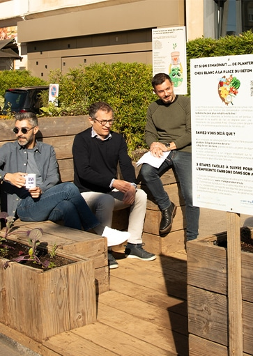
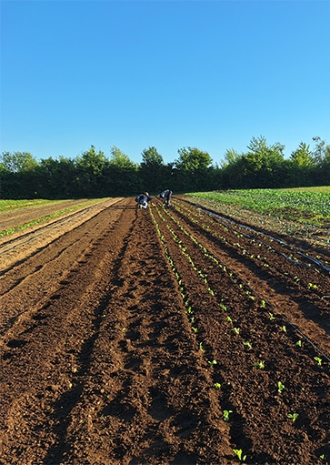
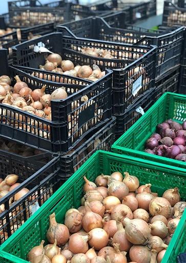
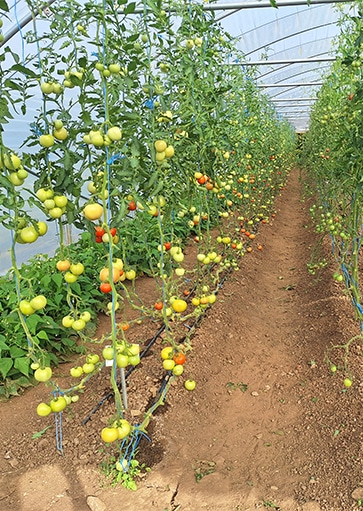
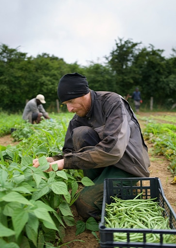

Projet pilote de production de légumes biologiques qui vise en particulier les cuisines des maisons relais de la Ville d'Esch-sur-Alzette
Objectifs :
L'idée principale des acteurs de ce projet est que la production de légumes s'inscrive dans un développement qui concilie le social, l'environnement et l'économie à travers une démarche d'économie solidaire.
Au niveau social : l'objectif est de pouvoir fournir des aliments écologiques de qualité accessibles au plus grand nombre des citoyens. Dans un premier temps, les produits de la serre seront destinés aux maisons relais de la Ville. Selon les surfaces de production localement disponibles, l'ensemble des cuisines de collectivités présentes sur le territoire pourront à terme être visées.
Du point de vue environnemental : la Ville souhaite privilégier des denrées produites localement et de saison pour diminuer l'impact des transports et des déchets. Actuellement, l'alimentation saine et de qualité des cuisines des maisons relais est dépendante d'une production qui provient la plupart du temps de territoires très éloignés, coûteuse à la fois d'un point de vue écologique et économique. L'impact de notre alimentation sur l'environnement est énorme (30% des gaz à effet de serre) Des collaborations seront mise en place avec différents acteurs locaux pour pouvoir développer une production régionale.
Sous l'angle économique : le développement du projet permet la création d'emplois pour des personnes éloignées du marché du travail. Le travail d'exploitation, de valorisation ou de commercialisation des produits agricoles permet de former les salariés à un nouveau métier « vert » porteur d'avenir. Pour sensibiliser le grand public à l'importance d'une alimentation durable, des animations et des aménagements pédagogiques sont prévus sur le site. Ce projet s'inscrit dans une vision globale et des liens sont envisagés avec les autres projets environnementaux développés au sein de la commune : Waldschoul, « Escher Déierepark », vergers, cités jardinières, Arboretum…etc.
Services offerts :
Informations :
Horaires d'ouverture : du lundi au vendredi de 8h00 à 16h00
Ventes de légumes au marché de la Ville d'Esch les mardis et vendredis de 8h00 à 12h00